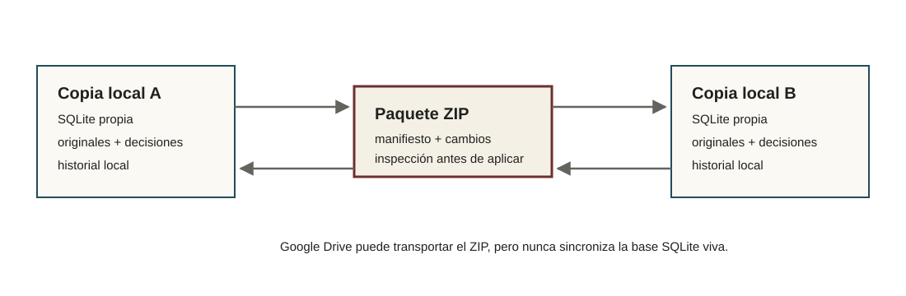

Trabajo entre copias locales
Intercambiar cambios sin compartir una base viva
Cada integrante conserva una copia local del proyecto. Los cambios viajan en paquetes ZIP que se inspeccionan y simulan antes de aplicarse.

Preparar una copia de trabajo
Una copia inicial puede distribuirse a varias personas. Cada copia se identifica localmente al abrirse.
Enviar y recibir cambios
Los paquetes incrementales contienen manifiestos y estado trazable. Recibir un ZIP no aplica cambios automáticamente: primero se revisa y se ejecuta una simulación.
Conflictos y recuperación
Los casos excepcionales se resuelven mediante acciones específicas y con backup previo cuando corresponde. La documentación técnica describe el linaje y la adopción de estado en más detalle.